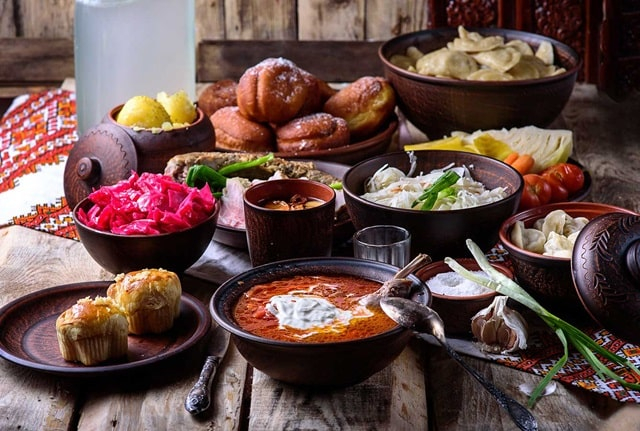
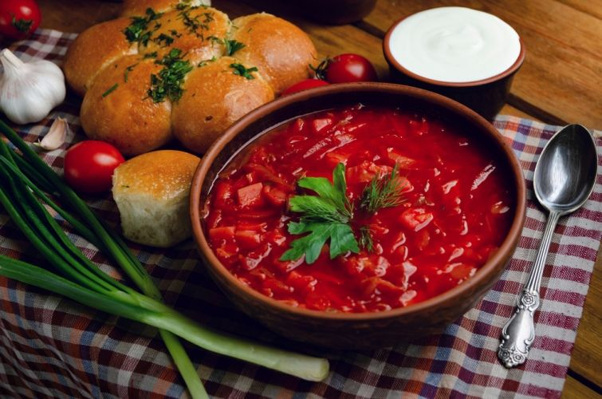
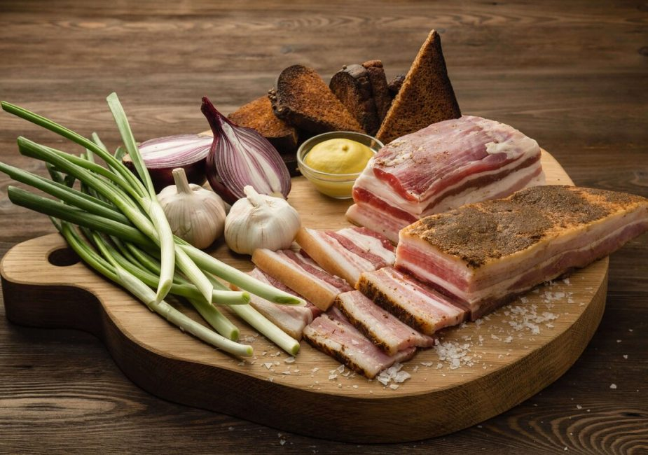
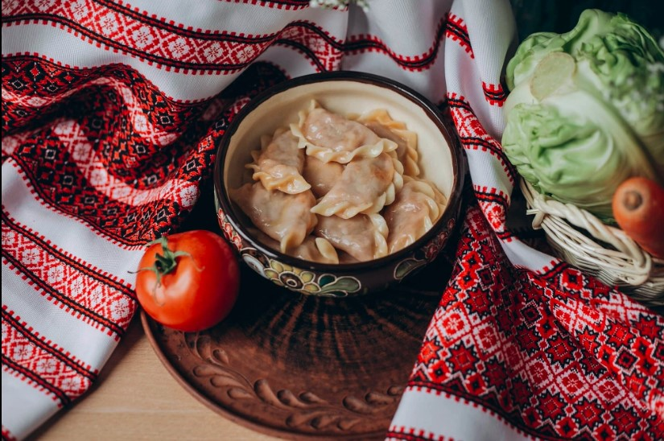
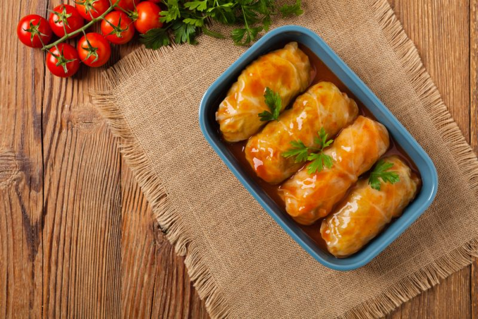

Українська кухня
Українська кухня - це не лише спосіб харчування, але й важлива складова частина культурної спадщини країни. Вона відображає багатовікові традиції, культурні звичаї та унікальність українського землеробства. Завдяки різноманіттю продуктів, що ростуть на плодючих землях, а також вмілому поєднанню інгредієнтів, українська кухня визнана своєю смакотою та поживністю.
Традиційні Смаки та Страви
Українська кухня славиться своєю великою кількістю страв, які різноманітні за смаком, ароматом та виглядом.
Ось декілька найпопулярніших традиційних страв:
-
Борщ: Безумовно, символ української кухні. Цей суп на основі буряка, капусти, картоплі, моркви, цибулі та
м'яса має неповторний смак і аромат.
рецепт

ІСТОРІЯ ВИНИКНЕННЯ БОРЩЮ - Сало: Традиційна українська страва, виготовлена зі свинячого жиру, яка подається як самостійна страва або використовується для підсмажування. рецепт 
- Вареники: Тісто, що обгортає начинку, яка може бути різною - картопля, сир, гриби або солодка начинка з фруктів або творогу. рецепт 
- Голубці: Капустяні листя, обгорнуті навколо начинки з м'яса та різних овочів, зазвичай тушковані в томатному соусі. рецепт 
Вплив Історії та Культури
Культура України відображається в її національних стравах не лише через смак та інгредієнти, а й через історичний контекст, традиції та значення, які вони несуть.
Україна була перехресним шляхом для багатьох націй та цивілізацій, що призвело до збагачення кухні різноманітними стравами та інгредієнтами. Зокрема, українська кухня отримала вплив від татар, поляків, євреїв, угорців та інших національностей, які проживали на цій території протягом історії.
Різноманітність ландшафтів та природних умов на території України вплинули на доступність різних продуктів та їх використання в кулінарних традиціях. Наприклад, в областях, де багато річкових та озерних водойм, риба відіграє важливу роль у харчуванні, тоді як в регіонах з плідними землями головними продуктами можуть бути зернові культури та овочі.
Багато страв української кухні пов'язані з національними святами та обрядами. Наприклад, кутя - це традиційна страва, яка готується на Різдво, а паска - традиційний хліб, який приготовлюється на Великдень. Ці страви є важливою частиною українських традицій та обрядів.
Сучасні Інновації та Збереження Традицій
Незважаючи на постійний розвиток та зміни у суспільстві, українська кухня залишається вірна своїм традиціям і смакам. Однак, вона також пристосовується до сучасних тенденцій, інтегруючи нові ідеї та інгредієнти, щоб задовольнити смаки сучасного споживача.
Заключні Думки
Українська кухня - це не просто їжа, це частина культурної спадщини, яка відображає багатство та різноманіття української культури. Вона продовжує радувати смаки людей
Всім смачного!